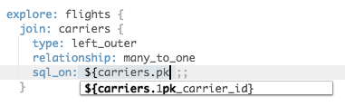

This is a style guide for Looker's LookML data modeling language. This style guide, as well as the associated linter, Look At Me Sideways (LAMS), are designed to help make your LookML project more maintainable.
These rules are opinionated, and might imply significant changes to a LookML project that has been developed organically. We've tried to provide rationales throughout so you can come to your own conclusions. However, at their core, these rules are about making your LookML and SQL reusable, self-explanatory, and reliable.
Note that the LAMS linter does not fully implement the style guide. Rules that are provided below, but which are not implemented in the style guide are marked with a 💬. Some may be "not yet implemented", whereas others may be more qualitative in nature and intended only for human consideration.
Summary: Implement consistent dimensions to communicate information about views' keys to developers who use the view
pk{n}_{key_name}......, where n is the total number of columns that form the primary key, and which may be omitted if it is 1, and key_name is any descriptive name.
Note: This applies to "regular" views that describe an underlying table, i.e. through a sql_table_name, derived_table, or implicit table name. In some cases, you may have a "field-only view", which would be joined using `join: {sql: ;;}`, for which this rule would not apply.
Rationale: With this naming convention, anyone creating a join can conclusively find the correct logic without having to investigate:
Additionally, anyone reading the join could conclusively verify it.
view: carriers {
sql_table_name: faa.carriers ;;
dimension: carrier_id {
hidden: yes
primary_key: yes
sql:${TABLE}.id;;
}
}
# ^ Altough `primary_key: yes` is used, the
# naming convention has not been followed
explore: flights {
join: carriers {
relationship: many_to_one
sql_on: ${carriers.carrier_id}
= ${flights.carrier_id} ;;
# ^ is this logic right? I
# would need to inspect the
# view definition to confirm
}
}
view: carriers {
sql_table_name: faa.carriers ;;
dimension: pk1_carrier_id {
hidden: yes
primary_key: yes
sql:${TABLE}.id;;
}
}
explore: flights {
join: carriers {
relationship: many_to_one
sql_on: ${carriers.pk1_carrier_id}
= ${flights.carrier_id} ;;
# ^ I know the join cardinality
# must be correct because I see it's
# joining on the primary key
}
}
# Example of a composite primary key
view: membership {
sql_table_name: membership ;;
dimension: pk2_user_id {
hidden:yes
sql:${TABLE}.user_id;;
}
dimension: pk2_group_id {
hidden:yes
sql:${TABLE}.group_id;;
}
dimension: user_x_group {
hidden:yes
primary_key: yes
sql: ${pk2_user_id} || 'x' || ${pk2_group_id} ;;
}
}
explore: invitations {
join: membership {
relationship: many_to_one
sql_on: ${membership.pk2_user_id}
= ${invitations.to_user_id}
AND ${membership.pk2_group_id}
= ${invitations.group_id} ;;
# ^ I can tell there MUST be only one membership
# for each row from the left table. Looks good.
}
}
explore: users {
join: membership {
relationship: many_to_one
sql_on: ${membership.pk2_user_id} = ${users.id} ;;
# ^ Without even examining the view, I can
# tell that something is wrong here!
# (And rule E2 can check this for me)
}
}
pk1_account_id over pk1_id. This way, views that logically share one or more primary keys can be recognized.pk3_a, pk3_b, and pk3_c, NOT pk1_a, pk1_b, and pk1_c.primary_key: yes (if necessary) so Looker can use it for generating symmetric aggregates. This is a small price to pay for the many instances of time saved looking up primary key information when writing/reading explores.{n}pk. This has been changed to reflect the fact that many databases do not allow column names to start with a number.... and the table definition should be defined before any other dimensions.
Rationale: By placing primary keys immediately below a derived table definition, users viewing the view file can more easily verify that the Primary Key Dimensions match the derived table's actual primary keys.
Rationale: The audience for PK information is developers. They use it to inform how to join and consume tables, and they can do so equally well with a hidden field.
Note: If a column that is a primary key should be user facing, you may want to expose it via a separate dimension.
primary_key dimension...unless the view declares that it has no primary key via a pk0_ named dimension.
# Missing a primary_key:yes dimension
view: users {
sql_table_name: users ;;
}
view: users {
sql_table_name: users ;;
dimension: pk1_user_id {
primary_key: yes
hidden: yes
sql: ${TABLE}.user_id ;;
}
}
# Too many primary_key:yes dimensions
view: users {
sql_table_name: users ;;
dimension: pk1_user_id {
primary_key: yes
hidden: yes
sql: ${TABLE}.user_id ;;
}
dimension: id {
primary_key: yes
sql: ${TABLE}.user_id ;;
}
}
view: log_events {
sql_table_name: log_events ;;
dimension: pk0_user_id {
hidden: yes
}
}
primary_key dimension must use or be the Primary Key Dimension(s)In the case of a simple, 1-column primary key, this simply means the Primary Key Dimension and the primary_key:yes dimension are the same dimension
view: users {
sql_table_name: users ;;
dimension: pk1_user_id {
primary_key: yes
hidden: yes
sql: ${TABLE}.user_id ;;
}
}
However, for composite primary keys, you should ensure that the primary_key:yes dimension uses all of the Primary Key Dimensions in its sql:
view: memberships {
sql_table_name: memberships ;;
dimension: pk2_user_id {
hidden: yes
sql: ${TABLE}.user_id ;;
}
dimension: pk2_group_id {
hidden: yes
sql: ${TABLE}.group_id ;;
}
dimension: membership_id {
hidden: yes
primary_key: yes
sql: ${pk2_user_id} || "-" || ${pk2_group_id} ;;
}
}
...named like pkd_{key_name}
Rationale: By naming it similarly to Primary Keys, it will be suggested to anyone joining on a view as a possible join key. At the same time, the use of a `d` instead of a number allows it to be differentiated from a primary key
Note: If your database supports multiple projections of data, you may want to come up with a more sophisticated naming scheme instead.
...named like pkc_{key_name}
Rationale: By naming it similarly to Primary Keys, it will be suggested to anyone joining on a view as a possible join key. At the same time, the use of a `c` instead of a number allows it to be differentiated from a primary key
Note: The name for this concept varies greatly from database to database. "pkc" was chosen for cluster, in favor of "pks" which could be read as a "surrogate key".
Note: If you have compound cluster/sort keys, it would be a good idea to include the rank of each column in the dimension name. Unlike the PK naming convention, each column should get a different numner, e.g. pkc1_site, pkc2_date, pkc3_country.
Summary: Implement fields in ways which (a) maximize the ability of developers to reuse them in the future, and (b) maximize the usability of explores for end users
... unless this is (A) a field-only view, or (B) a tightly coupled view (provide a base explore too!)
Rationale: Inter-view dependencies interfere with the re-use of the view
view: users {...}
view: orders {
...
measure: orders_per_user {
sql: ${count} / NULLIF(${users.count},0)
}
}
explore: orders {} # Errors :(
view: users {...}
view: orders {...}
view: users_orders {
# No need for a sql_table_name or derived_table
measure: orders_per_user {
sql: ${orders.count} / NULLIF(${users.count},0)
}
}
explore: orders {} #Doesn't break like before!
explore: users {
join: orders {...}
join: users_orders {
sql: ;;
# Use `sql` instead of `sql_on` and put some whitespace in it
relationship: one_to_one
view_label: "Orders" #For cleaner explore UI
}
}
view_label.Rationale: Field-level view labels can't be overridden by a join. Prefer view-level view labels.
"Plain" count fields can/should specify a filter of "primary key dimensions (or any non-nullable field) are not null"
Rationale: By default Looker will implement any non-filtered & non-distinct count field as a `COUNT(*)`. Filtering such "plain" counts on PK IS NOT NULL ensures correct counts in all of the following uses of the field: Counting just that table, counting that table when joined on as a one-to-one-or-zero table, counting that table with symmetric aggregates when joined on as a many_to_one table, and counting that table in explores with join paths.
measure: count {
type: count
filters:{
field: pk1_user_id
value: "NOT NULL"
}
}
Note: The LookML filter syntax for "is not null" varies depending on the type of the field. For strings, use -NULL. For numbers, use NOT NULL.
Rationale: User experience. Just do it.
Note: Think about the audience when you write a description. Information for end users can go in the description, whereas information for other developers can go in a LookML comment
view: order_items { ... pk1_order_item_id {hidden:yes}}
Rationale: The ID field will make most sense for end users when they are exposed under the view for which they are a primary key.
view: order_items { ... dimension: order_id { ... description: "..." } }
view: orders { ... dimension: id { ... hidden:yes }}
view: order_tems { ... dimension: order_id { hidden:yes }}
view: orders { ... dimension: id {... description: "..." }}
Summary: Restrict the ways in which you write the SQL for derived tables in order to make them more modular and their results more realiable and understandable.
Note: These rules may seem hard to comply with at first. Although they may represent a large change from your usual way of writing SQL, the change also brings a large positive impact.
Rationale: sql_trigger_value is an older construct and can have subtle timing issues when multiple tables interact.
Rationale: Primary keys define a contract that allows anyone reviewing the logic of a query to evaluate it modularly. Without them, any attempt to troubleshoot a query requires an arbitrarily deep investigation of related subqueries. With them, each query and subquery can be evaluated independently against their declared PK and the declared PK's of the participating tables.
view: user_lifetime {derived_table: {sql:
SELECT
user_id as pk1_user_id
---
COUNT(*) as lifetime_orders,
SUM(amount) as lifetime_spend
FROM orders
GROUP BY user_id ;;}
view: user_lifetime {derived_table: {sql:
SELECT
user_id,
COUNT(*) as lifetime_orders,
SUM(amount) as lifetime_spend
FROM orders
GROUP BY 1 ;;}
derived_table: {sql:
WITH orders AS (
SELECT order_id, SUM(amount) FROM order_items
GROUP BY 1
)
-- ^ The rule applies to CTE's/subqueries as well
SELECT
user_id as pk1_user_id
---
COUNT(*) as lifetime_orders,
SUM(amount) as lifetime_spend
FROM orders
GROUP BY user_id ;;}
...where {n} is the total number of columns in the primary key
view: events_rollup {derived_table: {sql:
SELECT
site as pk2_site,
date as pk2_date,
---
COUNT(*) as events
FROM events
GROUP BY site,date ;;}
Note: If you are using _in_query to generate a dynamic derived table where a column may or may not be present in the derived table's primary key, you should always select a static number of PK columns and conditionally NULL out their values, rather than selecting a dynamic number of columns.
view: dynamic_events_rollup {derived_table: {sql:
SELECT
site as pk2_site,
{% if date.date._in_query %} date as pk2_date, {% endif %}
---
COUNT(*) as events
FROM events
GROUP BY site,date ;;}
view: dynamic_events_rollup {derived_table: {sql:
SELECT
site as pk2_site,
{% if date.date._in_query %} date
{% else %} NULL
{% endif %} as pk2_date,
---
COUNT(*) as events
FROM events
GROUP BY site,date ;;}
derived_table: {sql:
SELECT
COUNT (*) as order_count,
user_id as pk1_user_id
FROM orders
GROUP BY user_id ;;}
view: instance_daily {derived_table: {sql:
SELECT
events.instance_id as pk2_instance_id,
events.event_date as pk2_event_date,
---
events.app_version,
COUNT(*) as events
FROM events
GROUP BY 1,2,3
;;}}
view: instance_daily {derived_table: {sql:
SELECT
events.instance_id as pk3_instance_id,
events.event_date as pk3_event_date,
events.app_version as pk3_app_version,
---
COUNT(*) as events
FROM events
GROUP BY 1,2,3
;;}}
view: instance_daily {derived_table: {sql:
SELECT
events.instance_id as pk3_instance_id,
events.event_date as pk3_event_date,
ROW_NUMBER() OVER (
PARTITION BY events.instance_id, events.event_date
) as pk3_app_version_sequence
---
events.app_version,
COUNT(*) as events
FROM events
GROUP BY 1,2
;;}}
Although the above two "questionable" examples satisfy rules T4 & T6, you will likely find that it is not natural to join them on their entire primary key when you try to use them elsewhere.
view: instance_daily {derived_table: {sql:
SELECT
events.instance_id as pk2_instance_id,
events.event_date as pk2_event_date,
---
MAX(events.app_version) as app_version,
-- Maybe min too depending on business logic
COUNT(*) as events
FROM events
GROUP BY 1,2
Note: This rule requires some reasoning to evaluate, but with proper PK information, can be done within the context of the current query. For example, the 1-to-1 full outer join example coalesces the PK's from the two sides of the join to come up with the effective primary key of the join.
SELECT
sites.pk1_id as pk2_site_id,
dates.pk1_date as pk2_date,
---
daily_rollup.count
FROM sites
CROSS JOIN dates
LEFT JOIN daily_rollup
ON daily_rollup.pk2_site_id = sites.pk2_id,
AND daily_rollup.pk2_site_id = sites.pk2_id
SELECT
sessions.pk1_id as pk1_session_id,
---
sites.name,
dates.is_holiday
FROM sites
CROSS JOIN dates
INNER JOIN sessions
ON sessions.date = sites.pk1_id,
AND sessions.site_id = dates.pk1_id
SELECT
COALESCE(
historical.pk2_site_id,
incremental.pk2_site_id
) as pk2_site_id,
COALESCE(
historical.pk2_date,
incremental.pk2_date
) as pk2_date
---
COALESCE(
incremental.count
historical.count,
) as count
FROM historical
FULL OUTER JOIN incremental
ON incremental.pk2_site_id = historical.pk2_site_id,
AND incremental.pk2_date = historical.pk2_date
... T5/T6 did not use ALL available columns. The window function should have a PARTITION BY of the preceding PK columns (at least one required)
Note: Actually, any window function that produces unique values for each row is acceptable, but this is almost always ROW_NUMBER().
Make sure not to use a RANK-like window function instead of ROW_NUMBER. The former yields duplicate ranks when two rows match. (For example, "Monday, Monday, Tuesday" would have ranks of 1,1,3)
SELECT
user_id as pk2_user_id,
ROW_NUMBER() OVER (
PARTITION BY user_id
ORDER BY id ASC
) as pk2_order_sequence_number,
---
id as order_id
GROUP BY 1,2
SELECT
ROW_NUMBER() as pk1_id,
---
*
FROM (
SELECT site, date, source, count(*) as session_count
FROM sessions
GROUP BY 1,2,3,4
)
I only mention the above example because I've actually seen it used. The primary key for this is simply site,date,source. The ROW_NUMBER added as an afterthough is not a primary key. (In this ruleset, it is disallowed by rules T5/T6 which require one or more columns to precede the window function, if any)
view: user_lifetime {derived_table: {sql:
SELECT
user_id as pk1_user_id
---
COUNT(*) as lifetime_orders,
SUM(amount) as lifetime_spend
FROM orders
GROUP BY user_id ;;}
Note: This does not strictly need to immediately follow the columns required by rules T5 - T7. After, such columns, the PK may continue with 0, 1, or more aggregates, but this is rare, and in most cases such aggregates would not need to be in a primary key.
Rationale: Often, short subqueries are desired for existence or scalar logic that are (a) not reused outside of the current query, and (b) simple enough to read and understand that they can be analyzed in the context of the containing query with little added complexity
view: new_orders {derived_table:{sql:
SELECT
pk1_order_id
FROM orders
WHERE order_date > (SELECT MAX(order_date) FROM order_rollup)
-- ^ This single-column subquery is exempt
;;}}
view: pending_users {derived_table:{sql:
SELECT
pk1_user_id
FROM users
WHERE id IN (SELECT user_id FROM orders WHERE status='Pending')
-- ^ This single-column subquery is exempt
;;}}
Rationale: Since this style of query/subquery simply passes on the PK attributes of the referenced table/query, it's reasonable to save time writing this query and for readers of your query to go find that PK information in that single other table/query.
view: customers {derived_table: {sql:
SELECT *
FROM ${accounts.SQL_TABLE_NAME}
WHERE is_customer = TRUE
;;}}
Rationale: Rather than trusting/hoping the data will be what you want, we can ensure it and prevent bad data from propagating upstream
--BigQuery - More convenient syntax
SELECT
user_guid as pk1_user_guid,
---
COUNT(*) as events,
CASE WHEN MIN(account_id) <> MAX(account_id)
THEN ERROR("Non-unique violation in view foo on column account_id for user_guid " || user_guid)
ELSE MIN(account_id)
END AS account_id
FROM events
GROUP BY user_guid
Note: In a dialect where dividing by zero throws an error, this is a good approach. If done in a PDT, the building of the new PDT will fail.
-- If division by zero throws for your syntax
SELECT
user_guid as pk1_user_guid,
---
COUNT(*) as events,
MIN(account_id)
||SUBSTR('',0 / CASE WHEN MIN(account_id) <> MAX(account_id) THEN 0 ELSE 1 END)
^Concat a zero length string for string types, or add 0 for integer types
AS account_id
FROM events
GROUP BY user_guid
...unless a limit is also used (which should itself be unusual)
Rationale: We often order data when querying directly, but make sure to remove this ORDER BY clause when saving the query as a derived table, as the sort order does not ultimately affect the table, but does cause the query to use more resources.
Rationale: Sorting is much more resource intensive than a simple MIN/MAX (or FIRST/LAST if your dialect supports it).
derived_table: user_first_order {derived_table: {sql:
SELECT *
FROM (
SELECT
user_id as pk1_user_id,
---
ROW_NUMBER() OVER (
PARTITION BY user_id
ORDER BY id ASC
) as num,
id as order_id,
FROM orders
)
WHERE num = 1
;;}}
derived_table: user_first_order {derived_table: {sql:
SELECT
user_id as pk1_user_id,
---
MIN(id) as order_id
FROM orders
GROUP BY user_id
;;}}
Note: If you want to select the min/max based on a different column, like date, see this guide
To clarify, liquid/dynamic SQL in non-persisted, aka ephemeral, derived tables is fine.
Rationale: Triggered persistent tables usually don't have the necessary explore context to correctly evaluate the dynamic logic. And even persists_for derived tables do not work as expected with dynamic SQL (confirmed as of v5.14)
Note: One possible exception may be {{_model._name}}, but still be careful.
Rationale: More often than not, developers use UNION instead of UNION ALL unintentionally, with terrible performance implications. Therefore, if you actually need a plain UNION, make that explicit in an accompanying comment.
${view_name.field_name}
explore: orders {
join: users {
relationship: many_to_one
sql_on: ${users.1pk_id} = ${orders.user_id} ;;
}
}
explore: orders {
join: users {
relationship: many_to_one
sql_on: users.id = orders.user_id ;;
}
}
Note: Sometimes you may want to make joins dynamic using _in_query. This requires you to reference fields to join on IF the view is _in_query but NOT use the substitution operator since that forces the view to be in the query.
This is relevant for any 1:1, 1:m, m:1, 1:0or1 joins. In otherwords, any non-many-to-many join (which you should only be using with great caution)
join: users {
relationship: many_to_one
sql_on: ${pk1_user_id} = ${orders.user_id} ;;
}
join: users {
relationship: many_to_one
sql_on: ${users.id} = ${orders.user_id} ;;
# ^ I can only _hope_ that this is right, or spend time verifying it
}
join: dates {
relationship: many_to_many
sql_on: ${dates.pk1_date} >= $[users.created_date} AND ${dates.pk1_date} <= $[users.deleted_date} ;;
}
explore: order_items {
join: orders {
relationship: many_to_one
sql_on: ${orders.pk1_id} = ${order_items.order_id}
AND ${orders.pkd_user_id} = ${order_items.pkd_user_id}
;; # Results in a hash join with no network activity
}
}
explore: entities {
join: eav_attribute1 {
relationship: one_to_one
sql_on: ${eav_attribute1.pk2_entity_id} = ${entities.id}
AND ${eav_attribute1.pk2_attribute_id} = 1
AND ${eav_attribute1.pkd_entity_id} = ${order_items.pkd_entity_id}
AND ${eav_attribute1.idx_entity_id} = ${order_items.idx_entity_id}
;; # Results in a merge join with no network activity
}
join: eav_attribute2 {
relationship: one_to_one
sql_on: ${eav_attribute2.pk2_entity_id} = ${entities.id}
AND ${eav_attribute2.pk2_attribute_id} = 2
AND ${eav_attribute2.pk2_entity_id} = ${order_items.pkd_entity_id}
AND ${eav_attribute2.idx_entity_id} = ${order_items.idx_entity_id}
;; # Results in a merge join with no network activity
}
}
Note: In the EAV example, even though the first part of the primary key, the distribution key, and the sort/cluster key all result in `entity_id`, writing them out multiple times with the different key dimensions communicates what they do to anyone reading the join, and should have negligible performance impact.
For small tables, this won't matter much, but for big tables it will make a big difference, so it's good to be in the habit.
explore: events {
always_filter: {
filters:{ field:codim_activity.__date value:"28 days,null"}
}
}
Note: This is all that's needed if the filtered table is the base of an explore with only left or inner joins. Otherwise, you can push the filter down into the sql_table_name (or derived table) using {% condition view.always_filtered_field %} table.column {% endcondition %}
explore: users {
join: orders {
relationship: one_to_many
sql_on: ${orders.user_id} = ${users.pk1_id} ;;
}
join: favorites {
relationship: one_to_many
sql_on: ${favorites.user_id} = ${users.pk1_id} ;;
}
}
Rationale: In addition to performance problems associated with the multiplicative "fanout", the spurious relationships can cause bad results, and break user trust.
explore: users {
join: user_join_paths {
relationship: one_to_one
# Actually many-to-many, so not joining on PK constraint
sql_on: 0=1
{% if orders._in_query %} OR ${user_join_paths.path} = 'orders' {%endif%}
{% if favorites._in_query %} OR ${user_join_paths.path} = 'favorites' {%endif%}
;;
}
join: orders {
sql_on: ${user_join_paths.path} = 'orders'
AND ${orders.user_id} = ${users.pk1_id} ;;
relationship: one_to_one # Actually one_to_many, but avoiding symmetric aggregates
}
join: favorites {
sql_on: ${user_join_paths.path} = 'favorites'
AND ${favorites.user_id} = ${users.pk_id} ;;
relationship: one_to_one # Actually one_to_many, but avoiding symmetric aggregates
}
}
Note: The above strategy relies on enforcement of rule F3. See this article for more details.
foreign_key based join, do not use a *-to-many relationshipNote: Specifying join logic using sql_on is usually preferred to using foreign_key, as sql_on is more general-purpose.
If you do use foreign_key to specify your join logic, Looker will implicitly join this declared foreign key against the primary key of the joined table. As such, the resulting join should be a many_to_one join (or rarely one_to_one if you use the primary key of the base view as the foreign key in the join)
explore: orders {
join: users {
foreign_key: user_id
relationship: many_to_many
}
}
explore: orders {
join: users {
foreign_key: user_id
relationship: many_to_one
}
}
# Joins are already implicitly many_to_one by default, so this is ok
explore: orders {
join: users {
foreign_key: user_id
}
}
# In some cases, one_to_one is appropriate
explore: orders {
join: orders_derived_table {
foreign_key: pk1_order_id
relationship: one_to_one
}
}
Among other reasons to favor brevity, long explore names/labels will be truncated in Looker's Explore picker UI. Help maintain a good experience for end users by keeping Explore names below 30 characters.
Note: In LAMS, you can customize the max length for this rule by setting a maxLength option associated with this rule in your manifest file.
explore: orders {}
explore: orders {
label:"Data Warehouse: BigQuery > Schema: Business > Datamart: eCommerce > Facts > Orders"
}
explore: orders {
label: "Orders"
description: "Data Warehouse: BigQuery > Schema: Business > Datamart: eCommerce > Facts > Orders"
}
# Providing a custom limit in manifest.lkml
#LAMS
#rule: E7 {options: {maxLength: 50}}
Each LookML block within a file should add one level of indentation for any inner line breaks, except for the line containin the block's closing brace, which should be at the prior indentation.